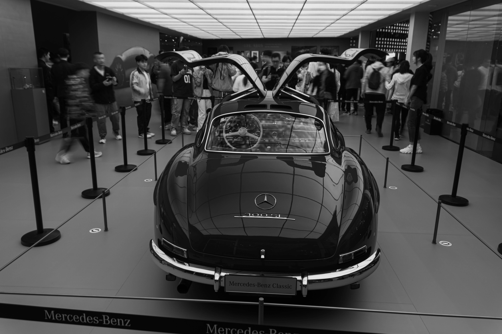

ABOUT ME
Hi, and welcome to my personal portfolio website. I’m Minhao Liu, a 17-year-old photographer based in Beijing. I’m interested in photography and visual storytelling, especially the way an image can capture a moment, a place, or a feeling. I often photograph automobiles, landscapes, and street scenes, looking for movement, atmosphere, and quiet moments in everyday life. I hope you enjoy my work.